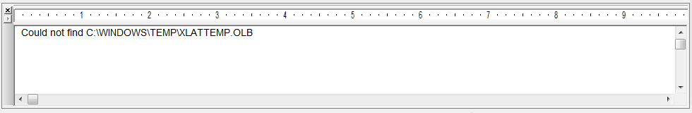

The OrCAD Capture session log contains a record of events that occur during the current session of Capture. This window has a ruler with adjustable tabs, so you can format the way the information in the session log appears. This formatting only applies to the session log. It does not affect the way reports are formatted in other applications. You can set the session log ruler measurements to appear in U.S. or metric units by using the appropriate setting in the Regional Settings of your Control Panel.
The session log also includes results and messages from Capture utilities found on the Tools menu. If Capture reports an error or warning in the session log, you can get specific help on it by double-clicking on the message. In this case, Capture opens the file that contains the error and places the cursor at the location of the error. These files include netlists, CDS.LIB, HDL.VAR, and VHDL/Verilog models.

You can save the session log to any location on your system by clicking in the Session Log window and choosing File - Save As in OrCAD Capture. If Capture exits with a crash, the session log is saved as capture_crash_session.log in the %TEMP% folder, if defined, else it is saved in the current working directory.
To hide the session log
- Choose Hide from the pop-up menu of the left bar of the session log.
To show the session log
- Choose Window - Session Log
To clear the session log
- Choose Clear Session Log from the pop-up menu of the left bar of the session log.